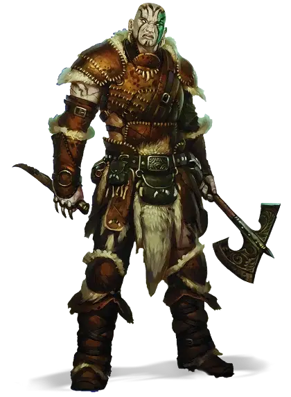

Голиаф
Goliath

Первые голиафы жили на самых высоких горных вершинах — далеко за лесной чертой, где воздух разрежен и воют холодные ветры. Отдаленно связанные с великанами и наделённые сверхъестественной природой горного дома своих предков, голиафы достигают от 7 до 8 футов в высоту и имеют широкий спектр оттенков кожи, напоминающих различные типы камня.
Особенности голиафа
Вы обладаете следующими особенностями.
Увеличение характеристик. Либо значение одной характеристики по вашему выбору увеличивается на 2, а другой — на 1, либо значение трёх различных характеристик по вашему выбору увеличивается на 1.
Скорость. Ваша базовая скорость ходьбы — 30 футов.
Вид существа. Вы — Гуманоид.
Размер. Ваш размер — Средний.
Маленький великан. Вы владеете навыком Атлетика, и при определении вашей грузоподъёмности, а также веса, который вы можете толкать, тянуть и поднимать, вы считаетесь существом на один размер больше.
Рождённый в горах. Вы получаете сопротивление урону холодом. Кроме того, вы акклиматизированы к большой высоте, даже если вы никогда там не были, включая высоту более 20 000 футов (6 километров).
Выносливость камня. Вы можете сверхъестественным образом использовать вашу твёрдость камня, чтобы избежать повреждений. При получении урона вы можете реакцией бросить к12. Прибавить к результату ваш модификатор Телосложения и уменьшите полученный урон на итоговую сумму.
Вы можете использовать эту особенность количество раз, равное вашему бонусу мастерства. Вы восстанавливаете все потраченные использования по окончании продолжительного отдыха.
Языки. Ваш персонаж может говорить, читать и писать на Общем и еще одном языке, который по вашему мнению подходит для персонажа.